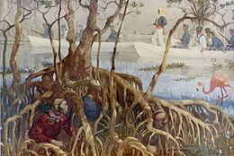

Introduction
Pour commencer, la Floride est un Etat situé au sud-est des Etats Unis. Avec 21 477 737 habitants (2019) c'est le 3ème Etat le plus peuplé et ayant une superficie de 170 451 km², c'est le 22ème Etat le plus grand.Époque précolombienne
Les Paléoaméricains entrèrent sur le territoire actuel de la Floride, il y a environ 12 000 ans pendant la glaciation du Wisconsin.Les premières communautés se sédentarisèrent près des littoraux à partir de 5000 av. J-C.
Au XVIe siècle, la population de Floride doit être comprise entre 100 000 et 350 000 habitants répartis en de nombreux villages et tribus.
Colonisation européenne
L'espagnol Juan Ponce de León aurait découvert la Floride en cherchant la Fontaine de Jouvence entre le 2 et le 8 avril 1513, près de l'actuelle ville de Saint Augustine. Il baptisa l'endroit « la Pascua florida », ce qui signifie « les Pâques fleuries » en référence au dimanche des Rameaux (dans le calendrier liturgique chrétien, c'est le dimanche qui précède le dimanche de Pâques et qui marque l'entrée dans la Semaine sainte).Dans la course aux colonies, la France s'intéresse à l'Amérique du Nord dès le XVIe siècle. Le huguenot français Jean Ribault aborde la côte orientale de Floride le 30 avril 1562 et prend possession de la Floride au nom du roi de France. Il construit le bastion Charlesfort pour défendre la nouvelle colonie de la Floride française. Le 30 juin 1564, René de Laudonnière fonde un second fort en Floride française, le Fort Caroline (Jacksonville).
Le 8 septembre 1565, la colonie espagnole de San Augustin est fondée par Pedro Menéndez de Avilés : elle devient ainsi la plus ancienne colonie des États-Unis occupée en continu par des Européens.
Durant l'époque moderne (XVIe au XVIIIe siècle), les navires européens utilisent le courant du Gulf Stream pour retourner en Europe, si bien que le détroit de Floride devient un lieu de passage stratégique.
Le traité de Paris (1763) met fin à la guerre de Sept Ans et modifie considérablement la carte des colonies d'Amérique du Nord : l'Espagne doit céder la Floride aux Anglais. La plupart des habitants, qu'ils soient colons ou Amérindiens, quittent la région. La métropole britannique divise le territoire en deux entités :
- La Floride ORIENTALE, avec pour capitale Saint Augustine
- La Floride OCCIDENTALE, avec pour principale ville Pensacola
Souveraineté américaine et guerres séminoles
La Floride est cédée aux États-Unis par le traité d'Adams-Onís, signé le 22 février 1819, et constituée en territoire le 30 mars 1822. La capitale est installée à Tallahassee, à mi-chemin entre Saint Augustine et Pensacola. Le premier gouverneur est Andrew Jackson auquel succéda William Pope Duval dès 1822.- Première Guerre Séminole (1816 - 1818) 
- Co-ee-há-jo (Chef des séminoles- 1837)
- John Milton
Le 3 mars 1845, la Floride devient le 27e État des États-Unis avec pour premier gouverneur William Dunn Moseley. Elle se dote d'un sceau en 1847. Le sceau actuel est le même depuis 1985.
La Troisième guerre séminole (1855-1858) est menée pour vaincre la résistance des derniers Amérindiens. À l'issue du conflit, il ne reste plus qu'une centaine de Séminoles en Floride.
À la veille de la guerre de Sécession, la Floride est l'État le moins peuplé du Sud des États-Unis, avec environ 140 400 habitants, dont 44 % sont des esclaves. L'esclavage devient une question politique et économique majeure pour les planteurs floridiens. Au cours de l'élection présidentielle américaine de 1860, ils refusent de voter pour Abraham Lincoln et la Floride finit par se séparer de l'Union en signant l'ordonnance du 10 janvier 1861. Elle rejoint les États confédérés d'Amérique quelques semaines plus tard et s'engage dans la guerre de Sécession.
Guerre de Sécession et Reconstruction (1860-1880)
La Floride fournit de la viande, du poisson, du coton et du sel à ses alliés. Les Nordistes organisent un blocus maritime et occupent plusieurs ports floridiens pour empêcher le ravitaillement des États sécessionnistes. Les Sudistes contrôlent la plupart des forts. John Milton, le gouverneur de la Floride de l'époque, organise une milice et renforce la défense de son État. Le contingent floridien compte environ 15 000 soldats.Les déserteurs sont de plus en plus nombreux; environ 2 000 Floridiens, opposés à la sécession, rejoignent même les rangs de l'armée ennemie.
En mai 1865, le général nordiste Edward M. McCook est chargé de reprendre le contrôle de la Floride. Il défie le colonel George Washington Scott, fit hisser le drapeau des États-Unis sur le capitole de l'État à Tallahassee et lit la proclamation d'émancipation des esclaves le 12 mai. La Guerre de Sécession est terminée en Floride, qui est officiellement réintégrée dans l'Union le 25 juillet 1868.
Ségrégation, migrations et développement économique (1880-1945)
Le tourisme devient une activité majeure de la Floride et est favorisé par la construction de voies ferrées dans la deuxième moitié du XIXe siècle. La croissance que connaît la Floride à cette époque repose en grande partie sur le développement rapide de son réseau ferroviaire. La Floride se spécialisa dans l'élevage, la culture des agrumes, la production de bois, de cigares et de phosphates.Pendant la guerre hispano-américaine de 1898, Tampa, Miami et Jacksonville servent de lieux d'embarquement pour attaquer Cuba. Après le conflit, des milliers de soldats rentrés au pays s'installent en Floride.
Les lynchages et les violences racistes dirigées contre les Noirs se multiplient après la Première Guerre mondiale. Pour échapper aux persécutions et aux discriminations, près de 40 000 Afro-Américains quittent la Floride pour s'installer dans les villes du Nord-Est des États-Unis.
Le boom ferroviaire et foncier des années 1920 résulte de l'afflux d'investissements extérieurs et profite à des villes comme Palm Beach et Miami. Cet élan est brisé par les ouragans de 1926 et 1928. Dès 1933, le président américain Franklin Delano Roosevelt, qui subit une tentative d'assassinat à Miami, met en place le New Deal pour sortir le pays de la Grande Dépression. En Floride, ce programme prend des formes multiples comme la construction du Cross-Florida Barge Canal. Cette région connaît alors une importante croissance démographique en attirant des Américains mais aussi des Canadiens. Il faut attendre l'avènement de la société des loisirs, dans les années 1960, pour voir s'installer le Walt Disney World Resort à Orlando.